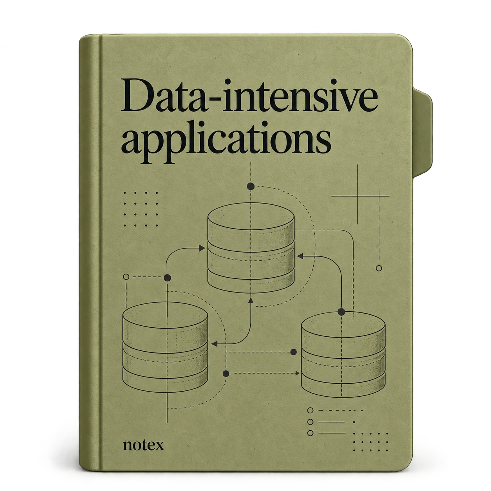

OPEN LEARNING PATH / DDIA
Understand how data systems fit together.
Reason about data systems, from storage and replication to streams and responsible design.
15 MODULES · 202 LESSONS · FREE TO READ
A little progress, one lesson at a time.Your progress stays in this browser.
Start learning →CURRICULUM STRUCTURE
- 01.01Study goalsUse these notes to reason about how data systems behave under real workloads.
- 01.02Topics in this learning pathThe modules move from requirements and data models to storage, replication, transactions, and processing.
- 01.03A practical study methodFor each lesson, write down the mechanism, the assumptions it relies on, and the failure mode it prevents.
- 02.01Operational Versus Analytical SystemsIf you are working on data systems in an enterprise, you are likely to encounter several different types of people who work with data. The first type are backend engineers who…
- 02.02Characterizing Transaction Processing and AnalyticsIn the early days of business data processing, a write to the database typically corresponded to a commercial transaction taking place: making a sale, placing an order with a…
- 02.03Data WarehousingAt first, the same databases were used for both transaction processing and analytical queries. SQL turned out to be quite flexible in this regard; it works well for both types…
- 02.04Systems of Record and Derived DataRelated to the distinction between operational and analytical systems, these notes also distinguishes between systems of record and derived data systems. These terms are useful…
- 02.05Cloud Versus Self-HostingWith anything that an organization needs to do, one of the first questions is whether it should be done in-house or outsourced. That is, should you build or should you buy?
- 02.06Pros and Cons of Cloud ServicesUsing a cloud service, rather than running comparable software yourself, essentially outsources the operation of that software to the cloud provider. There are good arguments…
- 02.07Cloud Native System ArchitectureBesides having a different economic model (subscribing to a service instead of buying hardware and licensing software to run on it), the rise of the cloud has also had a…
- 02.08Operations in the Cloud EraTraditionally, the people managing an organization’s server-side data infrastructure were known as database administrators (DBAs) or system administrators (sysadmins). More…
- 02.09Distributed Versus Single-Node SystemsA system that involves several machines communicating via a network is called a distributed system. Each of the processes participating in a distributed system is called a…
- 02.10Data Systems, Law, and SocietyAs you’ve seen in this topic, the architecture of data systems is influenced not only by technical goals and requirements, but also by the human needs of the organizations that…
- 02.11Recap: Trade-Offs in Data Systems ArchitectureThe theme of this topic has been to understand trade-offs—that is, to recognize that many questions do not have one right answer, but several possibilities that each have pros…
- 03.01Case Study: Social Network Home TimelinesImagine we have been given the task of implementing a social network in the style of X (formerly Twitter), where users can post messages and follow other users. This will be a…
- 03.02Describing PerformanceMost discussions of software performance consider two main types of metric:
- 03.03When an Overloaded System Won’t RecoverIf a system is close to overload, with throughput pushed close to the limit, it can sometimes enter a vicious cycle where it becomes less efficient and hence even more…
- 03.04Latency and Response Time“Latency” and “response time” are sometimes used interchangeably, but in these notes we will use these and a few related terms in a specific way (illustrated in Figure 2-4):
- 03.05Average, Median, and PercentilesBecause the response time varies from one request to the next, we need to think of it not as a single number, but as a distribution of values that we can measure. In Figure…
- 03.06Use of Response Time MetricsHigh percentiles are especially important in backend services that are called multiple times as part of serving a single end-user request. Even if you make the calls in…
- 03.07Reliability and Fault ToleranceEverybody has an intuitive idea of what it means for something to be reliable or unreliable. For software, typical expectations include the following:
- 03.08Fault ToleranceWe call a system fault-tolerant if it continues providing the required service to users in spite of certain faults occurring. If a system cannot tolerate a certain part…
- 03.09Hardware and Software FaultsWhen we think of causes of system failure, hardware faults quickly come to mind:
- 03.10Humans and ReliabilityHumans design and build software systems, and the operators who keep the systems running are also human. Unlike machines, humans don’t just follow rules; one of their strengths…
- 03.11How Important Is Reliability?Reliability is not just for nuclear power stations and air traffic control; more mundane applications are also expected to work reliably. Bugs in business applications lead to…
- 03.12ScalabilityEven if a system is working reliably today, that doesn’t mean it will necessarily work reliably in the future. One common reason for degradation is increased load. Perhaps the…
- 03.13MaintainabilitySoftware does not wear out or suffer material fatigue, so it does not break in the same ways as mechanical objects do. But the requirements for an application frequently…
- 03.14Recap: Defining Nonfunctional RequirementsIn this topic we examined several examples of nonfunctional requirements: performance, reliability, scalability, and maintainability. Through these topics, we also encountered…
- 04.01Relational Versus Document ModelsThe best-known data model today is probably that of SQL, based on the relational model proposed by Edgar Codd in 1970. In this model, data is organized into relations (called…
- 04.02The Object-Relational MismatchMuch application development today is done in object-oriented programming languages, which leads to a common criticism of the SQL data model: if data is stored in relational…
- 04.03Normalization, Denormalization, and JoinsIn Example 3-1 in the preceding section, region_id is given as an ID, not as the plain-text string Washington, DC, United States. Why?
- 04.04Many-to-One and Many-to-Many RelationshipsWhile the positions and education tables in Figure 3-1 are examples of one-to-many or one-to-few relationships (one résumé has several positions, but each position belongs only…
- 04.05Stars and Snowflakes: Schemas for AnalyticsData warehouses (see “Data Warehousing”) are usually relational, and there are a few widely used conventions for the structure of tables in a data warehouse, including a star…
- 04.06When to Use Which ModelThe main arguments in favor of the document data model are schema flexibility, better performance due to locality, and that for some applications it is closer to the object…
- 04.07Graph-Like Data ModelsWe saw earlier that the type of relationships is an important distinguishing feature across data models. If your application has mostly one-to-many relationships…
- 04.08Property GraphsIn the property graph (also known as labeled property graph) model, each vertex consists of the following:
- 04.09The Cypher Query LanguageCypher is a query language for property graphs, originally created for the Neo4j graph database and later developed into an open standard as openCypher. Besides Neo4j, Cypher…
- 04.10Graph Queries in SQLExample 3-3 suggested that graph data can be represented in a relational database. But if we put graph data in a relational structure, can we also query it using SQL?
- 04.11Triple Stores and SPARQLThe triple store model is mostly equivalent to the property graph model, using different words to describe the same ideas. It is nevertheless worth discussing, because various…
- 04.12Datalog: Recursive Relational QueriesDatalog, a much older language than SPARQL or Cypher, arose from academic research in the 1980s. It is less well-known among software engineers and not widely supported in…
- 04.13GraphQLGraphQL is a query language that, by design, is much more restrictive than the others we have seen in this topic. It’s intended for OLTP queries; its purpose is to allow client…
- 04.14Event Sourcing and CQRSIn all the data models we have discussed so far, the data is queried in the same form as it is written—be it JSON documents, rows in tables, or vertices and edges in a graph.…
- 04.15DataFrames, Matrices, and ArraysThe data models we have seen so far in this topic are generally used for both transaction processing and analytics purposes (see “Operational Versus Analytical Systems”). There…
- 04.16Recap: Data Models and Query LanguagesData models are a huge subject, and in this topic we have taken a quick look at a broad variety of models. We didn’t have space to go into all the details of each model, but…
- 05.01Storage and Indexing for OLTPConsider the world’s simplest database, implemented as two bash functions:
- 05.02Log-Structured StorageTo start, let’s assume that you want to continue storing data in the append-only file written by db_set, and you just want to speed up reads. One way you could do this is by…
- 05.03B-TreesThe log-structured approach is popular, but it is not the only form of key-value storage. The most widely used structure for reading and writing database records by key is the…
- 05.04Comparing B-Trees and LSM-TreesAs a rule of thumb, LSM-trees are better suited for write-heavy applications, whereas B-trees are faster for reads. However, benchmarks are often sensitive to details of the…
- 05.05Multicolumn and Secondary IndexesSo far we have discussed only key-value indexes, which are like primary-key indexes in the relational model. A primary key uniquely identifies one row in a relational table, or…
- 05.06Keeping Everything in MemoryThe data structures discussed so far in this topic have all been answers to the limitations of disks. Compared to main memory, disks are awkward to deal with. With both…
- 05.07Data Storage for AnalyticsThe data model of a data warehouse is most commonly relational, because SQL is generally a good fit for analytical queries. There are many graphical data analysis tools that…
- 05.08Cloud Data WarehousesEstablished data warehouse vendors such as Teradata, Vertica, and SAP HANA offer on-premises deployments under commercial licenses as well as cloud-based solutions. But as more…
- 05.09Column-Oriented StorageAs discussed in “Stars and Snowflakes: Schemas for Analytics”, data warehouses by convention often use a relational schema with a big fact table that contains foreign-key…
- 05.10Query Execution: Compilation and VectorizationA complex SQL query for analytics is broken down into a query plan consisting of multiple stages, called operators, which may be distributed across multiple machines for…
- 05.11Materialized Views and Data CubesWe previously encountered materialized views in “Materializing and Updating Timelines”: in a relational data model, they are table-like objects whose contents are the results…
- 05.12Multidimensional and Full-Text IndexesThe B-trees and LSM-trees we saw in the first half of this topic allow range queries over a single attribute; for example, if the key is a username, you can use them as an…
- 05.13Recap: Storage and RetrievalIn this topic we tried to get to the bottom of how databases perform storage and retrieval. What happens when you store data in a database, and what does the database do when…
- 06.01Formats for Encoding DataPrograms usually work with data in (at least) two representations:
- 06.02Terminology clashThe term serialization is unfortunately also used in the context of transactions, with a completely different meaning. To avoid overloading the word, we’ll stick with encoding…
- 06.03Language-Specific FormatsMany programming languages come with built-in support for encoding in-memory objects into byte sequences. For example, Java has java.io.Serializable, Python has pickle, and…
- 06.04JSON, XML, and Binary VariantsWhen moving to standardized encodings that can be written and read by many programming languages, JSON and XML are the obvious contenders: they are widely known and widely…
- 06.05Protocol BuffersProtocol Buffers (protobuf) is a binary encoding library developed at Google. It is similar to Apache Thrift, which was originally developed by Facebook; most of what this…
- 06.06AvroApache Avro is another binary encoding format, with some interesting differences from Protocol Buffers. It was started in 2009 as a subproject of Hadoop, as a result of…
- 06.07The Merits of SchemasAs we’ve seen, Protocol Buffers and Avro both use a schema to describe a binary encoding format. Their schema languages are much simpler than XML Schema or JSON Schema, which…
- 06.08Modes of DataflowAt the beginning of this topic we said that whenever you want to send some data to another process with which you don’t share memory—for example, when you want to send data…
- 06.09Dataflow Through DatabasesIn a database, the process that does the writing encodes the data, and the process that does the reading decodes it. Just one process may be accessing the database, in which…
- 06.10Dataflow Through Services: REST and RPCWhen you have processes that need to communicate over a network, you can arrange that communication in a few ways. The most common arrangement is to have two roles: clients and…
- 06.11Durable Execution and WorkflowsBy definition, service-based architectures have multiple services that are all responsible for different portions of an application. Consider a payment processing application…
- 06.12Event-Driven ArchitecturesIn this final section, we will briefly look at event-driven architectures, which are another way encoded data can flow from one process to another. In this context, a request…
- 06.13Recap: Encoding and EvolutionIn this topic we looked at several ways of turning data structures into bytes on the network or on disk. We saw how the details of these encodings affect not only their…
- 07.01Backups and ReplicationYou might be wondering whether you still need backups if you have replication. The answer is yes, because they have different purposes: replicas quickly reflect writes from one…
- 07.02Single-Leader ReplicationEach node that stores a copy of the database is called a replica. With multiple replicas, a question inevitably arises: how do we ensure that all the data ends up on all the…
- 07.03Synchronous Versus Asynchronous ReplicationAn important detail of a replicated system is whether the replication happens synchronously or asynchronously. (In relational databases, this is often a configurable option;…
- 07.04Setting Up New FollowersFrom time to time, you need to set up new followers—perhaps to increase the number of replicas or to replace failed nodes. How do you ensure that the new follower has an…
- 07.05Handling Node OutagesAny node in the system can go down, perhaps unexpectedly because of a fault, but also because of planned maintenance (e.g., rebooting a machine to install a kernel security…
- 07.06Implementation of Replication LogsHow does leader-based replication work under the hood? Several replication methods are used in practice. Let’s look at each one briefly.
- 07.07Problems with Replication LagBeing able to tolerate node failures is just one reason for wanting replication. As mentioned in “Distributed Versus Single-Node Systems”, other reasons include scalability…
- 07.08Reading your own writesMany applications let the user submit some data and then view what they have submitted. This might be a record in a customer database, or a comment on a discussion thread, or…
- 07.09Monotonic readsOur second example of an anomaly that can occur when reading from asynchronous followers is that it’s possible for a user to see things moving backward in time.
- 07.10Consistent prefix readsOur third example of replication lag anomalies concerns violation of causality. Imagine the following short dialog between Mr. Poons and Mrs. Cake:
- 07.11Solutions for Replication LagWhen working with an eventually consistent system, it is worth thinking about how the application behaves if the replication lag increases to several minutes or even hours. If…
- 07.12Multi-Leader ReplicationSo far in this topic we have considered only replication architectures using a single leader. Although that is a common approach, there are interesting alternatives.
- 07.13Geographically Distributed OperationIt rarely makes sense to use a multi-leader setup within a single region, because the benefits rarely outweigh the added complexity. However, in some situations this…
- 07.14Sync Engines and Local-First SoftwareMulti-leader replication is also appropriate if you have an application that needs to continue to work while it is disconnected from the internet. For example, consider the…
- 07.15Dealing with Conflicting WritesThe biggest problem with multi-leader replication—both in a geo-distributed server-side database and a local-first sync engine on end-user devices—is that concurrent writes on…
- 07.16Leaderless ReplicationThe replication approaches we have discussed so far in this topic—single-leader and multi-leader replication—are based on the idea that a client sends a write request to one…
- 07.17Writing to the Database When a Node Is DownImagine you have a database with three replicas, and one of the replicas is currently unavailable—perhaps it is being rebooted to install a system update. In a single-leader…
- 07.18Single-Leader Versus Leaderless Replication PerformanceA replication system based on a single leader can provide strong consistency guarantees that are difficult or impossible to achieve in a leaderless system. However, as we saw…
- 07.19Multi-Region OperationWe previously discussed cross-region replication as a use case for multi-leader replication (see “Multi-Leader Replication”). Leaderless replication is also suitable for…
- 07.20Detecting Concurrent WritesAs with multi-leader replication, leaderless databases allow concurrent writes to the same key, resulting in conflicts that need to be resolved. Such conflicts might be…
- 07.21Recap: ReplicationIn this topic we looked at the issue of replication. Replication can serve several purposes:
- 08.01Sharding and PartitioningWhat we call a shard in this topic has many names depending on which software you’re using. It’s called a partition in Kafka, a range in CockroachDB, a region in HBase and…
- 08.02Pros and Cons of ShardingThe primary reason for sharding a database is scalability. Sharding is a solution if the volume of data or the write throughput has become too great for a single node to…
- 08.03Sharding of Key-Value DataSay you have a large amount of data, and you want to shard it. How do you decide which records to store on which nodes?
- 08.04Sharding by Key RangeOne way of sharding is to assign a contiguous range of partition keys (from a minimum to a maximum) to each shard, like the volumes of a paper encyclopedia, as illustrated in…
- 08.05Sharding by Hash of KeyKey-range sharding is useful if you want records with nearby (but different) partition keys to be grouped into the same shard—for example, this might be the case with…
- 08.06Skewed Workloads and Relieving Hot SpotsConsistent hashing ensures that keys are uniformly distributed across nodes, but that doesn’t mean that the actual load is uniformly distributed. If the workload is highly…
- 08.07Operations: Automatic Versus Manual RebalancingWe have glossed over one important question with regard to rebalancing: does the splitting of shards and rebalancing happen automatically or manually?
- 08.08Request RoutingWe have discussed how to shard a dataset across multiple nodes, and how to rebalance those shards as nodes are added or removed. Now let’s move on to another question: if you…
- 08.09Sharding and Secondary IndexesThe sharding schemes we have discussed so far rely on the client knowing the partition key for any record it wants to access. This is most easily achieved in a key-value data…
- 08.10Recap: ShardingIn this topic we explored different ways of sharding a large dataset into smaller subsets. Sharding is necessary when you have so much data that storing and processing it on a…
- 09.01What Exactly Is a Transaction?Almost all relational databases today, and some nonrelational databases, support transactions. Most of them follow the style that was introduced in 1975 by IBM System R, the…
- 09.02The Meaning of ACIDThe safety guarantees provided by transactions are often described by the well-known acronym ACID, which stands for atomicity, consistency, isolation, and durability. The term…
- 09.03Single-Object and Multi-Object OperationsTo recap, in ACID, atomicity and isolation describe what the database should do if a client makes several writes within the same transaction:
- 09.04Weak Isolation LevelsIf two transactions don’t access the same data, or if both are read-only, they can safely be run in parallel, because neither depends on the other. Concurrency issues (race…
- 09.05Read CommittedThe most basic level of transaction isolation is read committed, and it makes two guarantees:
- 09.06Snapshot Isolation and Repeatable ReadIf you look superficially at read-committed isolation, you could be forgiven for thinking that it does everything that a transaction needs to do: it allows aborts (required for…
- 09.07Preventing Lost UpdatesOur discussion of the read-committed and snapshot isolation levels has primarily focused on guarantees about what a read-only transaction can see in the presence of concurrent…
- 09.08Write Skew and PhantomsIn the previous sections we looked at dirty writes and lost updates, two kinds of race conditions that can occur when different transactions concurrently try to write to the…
- 09.09SerializabilityIn this topic we have seen several examples of transactions that are prone to race conditions. Some race conditions are prevented by the read-committed and snapshot isolation…
- 09.10Actual Serial ExecutionThe simplest way of avoiding concurrency problems is to remove the concurrency entirely: execute only one transaction at a time, in serial order, on a single thread. By doing…
- 09.11Two-Phase LockingFor around 30 years, only one algorithm was widely used for serializability in databases: two-phase locking (2PL), sometimes called strong strict two-phase locking (SS2PL) to…
- 09.12Serializable Snapshot IsolationThis topic has painted a bleak picture of concurrency control in databases. On the one hand, we have implementations of serializability that don’t perform well (2PL) or don’t…
- 09.13Distributed TransactionsIn a single-node transaction, you have a single machine that is in charge of executing the transaction logic, such as the concurrency control algorithms for transaction…
- 09.14Two-Phase CommitTwo-phase commit is an algorithm for achieving atomic transaction commit across multiple nodes. It is a classic algorithm in distributed databases. 2PC is used internally in…
- 09.15Distributed Transactions Across Different SystemsDistributed transactions and 2PC have a mixed reputation. On the one hand, they are seen as providing an important safety guarantee that would be hard to achieve otherwise; on…
- 09.16Database-Internal Distributed TransactionsAs explained previously, there is a big difference between distributed transactions that span multiple heterogeneous storage technologies and those that are internal to a…
- 09.17Exactly-Once Message Processing RevisitedWe saw in “Exactly-once message processing” that an important use case for distributed transactions is to ensure that an operation takes effect exactly once, even if a crash…
- 09.18Recap: TransactionsTransactions are an abstraction layer that allows an application to pretend that certain concurrency problems and certain kinds of hardware and software faults don’t exist. A…
- 10.01Faults and Partial FailuresWhen you are writing a program on a single computer, it normally behaves in a fairly predictable way: either it works or it doesn’t. Buggy software may give the appearance that…
- 10.02Unreliable NetworksIn the past, older computers such as mainframes were made reliable by ensuring that individual components were redundant—for example, by employing RAID to sustain individual…
- 10.03The Limitations of TCPNetwork packets have a maximum size (generally a few kilobytes), but many applications need to send messages (requests, responses) that are too big to fit in one packet. These…
- 10.04Network Faults in PracticeWe have been building computer networks for decades—one might hope that by now we would have figured out how to make them reliable. Unfortunately, we have not yet succeeded.…
- 10.05Fault DetectionMany systems need to automatically detect faulty nodes. For example:
- 10.06Timeouts and Unbounded DelaysIf a timeout is the only sure way of detecting a fault, then how long should the timeout be? There is unfortunately no simple answer.
- 10.07Synchronous Versus Asynchronous NetworksDistributed systems would be a lot simpler if we could rely on the network to deliver packets with a fixed maximum delay and to not drop packets. Why can’t we solve this at the…
- 10.08Unreliable ClocksClocks and time are important. Applications depend on clocks in various ways, to answer questions like the following:
- 10.09Monotonic Versus Time-of-Day ClocksModern computers have at least two kinds of clocks: a time-of-day clock and a monotonic clock. Although both measure time, it is important to distinguish between them, since…
- 10.10Clock Synchronization and AccuracyMonotonic clocks don’t require synchronization, but time-of-day clocks need to be set according to an NTP server or other external time source in order to be useful.…
- 10.11Relying on Synchronized ClocksThe problem with clocks is that while they seem simple and easy to use, they have a surprising number of pitfalls. A day may not have exactly 86,400 seconds, time-of-day clocks…
- 10.12Process PausesLet’s consider another example of dangerous clock use in a distributed system. Say you have a database with a single leader per shard. Only the leader is allowed to accept…
- 10.13Knowledge, Truth, and LiesSo far in this topic we have explored the ways in which distributed systems are different from programs running on a single computer. Distributed systems have no shared memory,…
- 10.14The Majority RulesImagine a network with an asymmetric fault: a node is able to receive all messages sent to it, but any outgoing messages from that node are dropped or delayed. Even though that…
- 10.15Distributed Locks and LeasesLocks and leases in distributed applications are prone to misuse and are a common source of bugs. Let’s look at one particular case of how they can go wrong.
- 10.16Byzantine FaultsFencing tokens can detect and block a node that is inadvertently acting in error (e.g., because it hasn’t yet found out that its lease has expired). However, if the node…
- 10.17System Model and RealityMany algorithms have been designed to solve distributed systems problems—for example, we will examine solutions for the consensus problem in the related discussion. In order to…
- 10.18Formal Methods and Randomized TestingHow do we know that an algorithm satisfies the required properties? Because of concurrency, partial failures, and network delays, there are a huge number of potential states.…
- 10.19Recap: The Trouble with Distributed SystemsIn this topic we have discussed a wide range of problems that can occur in distributed systems. For example:
- 11.01LinearizabilityIf you want a replicated database to be as simple as possible to use, you should make it behave as if it were a consistent single-node database. Then users don’t have to worry…
- 11.02What Makes a System Linearizable?To understand linearizability better, let’s look at more examples. Figure 10-2 shows three clients concurrently reading and writing the same object x in a linearizable…
- 11.03Linearizability Versus SerializabilityLinearizability is easily confused with serializability (see “Serializability”), as both words seem to mean something like “can be arranged in a sequential order.” However,…
- 11.04Relying on LinearizabilityIn what circumstances is linearizability useful? Viewing the final score of a sporting match is perhaps a frivolous example; a result that is outdated by a few seconds is…
- 11.05Implementing Linearizable SystemsNow that we’ve looked at a few examples in which linearizability is useful, let’s think about how we might implement a system that offers linearizable semantics.
- 11.06The Cost of LinearizabilityAs some replication methods can provide linearizability and others cannot, it is interesting to explore the pros and cons of linearizability in more depth.
- 11.07ID Generators and Logical ClocksIn many applications you need to assign some sort of unique ID to database records when they are created, which gives you a primary key for referencing those records. In…
- 11.08Logical ClocksIn “Unreliable Clocks” we discussed time-of-day clocks and monotonic clocks. Both are physical clocks: hardware devices that measure the passing of time (seconds, milliseconds,…
- 11.09Linearizable ID GeneratorsAlthough Lamport clocks and hybrid logical clocks provide useful ordering guarantees, that ordering is still weaker than the linearizable single-node ID generator we talked…
- 11.10ConsensusIn this topic, we have seen several examples of things that are easy when you have only a single node but that get a lot harder if you want fault tolerance:
- 11.11The Impossibility of ConsensusYou may have heard about the FLP result—named after the authors Fischer, Lynch, and Paterson—which proves no algorithm is always able to reach consensus if there is a risk that…
- 11.12The Many Faces of ConsensusConsensus can be expressed in several ways. For example:
- 11.13Consensus in PracticeWe have seen that single-value consensus, CAS, shared logs, and atomic commitment are all equivalent: you can convert a solution to one of these problems into a solution to any…
- 11.14Coordination ServicesConsensus algorithms are useful in any distributed database that wants to offer linearizable operations, and many modern distributed databases use them for replication. But one…
- 11.15Recap: Consistency and ConsensusIn this topic we examined the topic of strong consistency in fault-tolerant systems: what it is and how to achieve it. We looked in depth at linearizability, a popular…
- 12.01Batch Processing with Unix ToolsSay you have a web server that appends a line to a log file every time it serves a request. For example, using the NGINX default access log format, one line of the log might…
- 12.02Batch Processing in Distributed SystemsThe machine that runs our Unix tools example has a number of components that work together to process the log data:
- 12.03Distributed FilesystemsThe filesystem provided by your operating system is composed of several layers:
- 12.04Object StoresObject storage services such as Amazon S3, Google Cloud Storage, Azure Blob Storage, and OpenStack Swift have become a popular alternative to distributed filesystems for batch…
- 12.05Distributed Job OrchestrationOur operating system analogy also applies to job orchestration. When you execute a Unix batch job, something needs to actually run the awk, sort, uniq, and head processes. Data…
- 12.06Batch Processing ModelsWe have seen how batch jobs are scheduled in a distributed environment. Let’s now turn our attention to how batch processing frameworks process data. The two most common models…
- 12.07MapReduceThe pattern of data processing in MapReduce is very similar to the web server log analysis example in “Simple Log Analysis”:
- 12.08Dataflow EnginesTo fix some of MapReduce’s problems, several new execution engines for distributed batch computations were developed, the most well-known of which are Spark and Flink. They are…
- 12.09Shuffling DataAs we’ve seen, both the Unix tools example at the beginning of the chapter and MapReduce are based on sorting. Batch processors need to be able to sort datasets petabytes in…
- 12.10Joins and GroupingLet’s look at how sorted data simplifies distributed joins and aggregations. We’ll continue with MapReduce for illustration purposes, though these concepts apply to most batch…
- 12.11Query LanguagesOver the years, execution engines for distributed batch processing have matured. The infrastructure is now robust enough to store and process many petabytes of data on clusters…
- 12.12DataFramesData scientists and statisticians are generally used to working with the DataFrame data model found in R and Pandas (see “DataFrames, Matrices, and Arrays”). A DataFrame is…
- 12.13Batch Use CasesNow that we’ve seen how batch processing works, let’s see how it is applied to a range of applications. Batch jobs are excellent for processing large datasets in bulk, but they…
- 12.14Recap: Batch ProcessingIn this topic we explored the design and implementation of batch processing systems. We began with the classic Unix toolchain (awk, sort, uniq, etc.) to illustrate fundamental…
- 13.01Transmitting Event StreamsIn the batch processing world, the inputs and outputs of a job are files (perhaps on a distributed filesystem). What does the streaming equivalent look like?
- 13.02Messaging SystemsA common approach for notifying consumers about new events is to use a messaging system: a producer sends a message containing the event, which is then pushed to consumers. We…
- 13.03Log-Based Message BrokersSending a packet over a network or making a request to a network service is normally a transient operation that leaves no permanent trace. Although it is possible to record…
- 13.04Databases and StreamsWe have drawn some comparisons between message brokers and databases. Even though they have traditionally been considered separate categories of tools, we saw that log-based…
- 13.05Keeping Systems in SyncAs we have seen throughout these notes, no single system can satisfy all data storage, querying, and processing needs. In practice, most nontrivial applications need to combine…
- 13.06Change Data CaptureThe problem with most databases’ replication logs is that they have long been considered to be an internal implementation detail of the database, not a public API. Clients are…
- 13.07State, Streams, and ImmutabilityWe saw in the related discussion that batch processing benefits from the immutability of its input files, so you can run experimental processing jobs on existing input files…
- 13.08Processing StreamsSo far in this topic we have talked about where streams come from (user activity events, sensors, and writes to databases) and how streams are transported (through direct…
- 13.09Uses of Stream ProcessingStream processing has long been used for monitoring purposes, where an organization wants to be alerted if certain things happen. For example:
- 13.10Reasoning About TimeStream processors often need to deal with time, especially when running analytics tasks, which frequently use time windows such as “the average over the last five minutes.” The…
- 13.11Stream JoinsIn “Joins and Grouping” we discussed how batch jobs can join datasets by key and how such joins form an important part of data pipelines. Since stream processing generalizes…
- 13.12Fault ToleranceIn the final section of this topic, let’s consider how stream processors can tolerate faults. We saw in the related discussion that batch processing frameworks can tolerate…
- 13.13Recap: Stream ProcessingIn this topic we discussed event streams, the purposes they serve, and how to process them. In some ways, stream processing is very much like the batch processing we discussed…
- 14.01Data IntegrationA recurring theme in these notes has been that for any given problem, there are several solutions, each with its own pros, cons, and trade-offs. For example, when discussing…
- 14.02Combining Specialized Tools by Deriving DataTo give one example, it is common to need to integrate an OLTP database with a full-text search index in order to handle queries for arbitrary keywords. Although some databases…
- 14.03Batch and Stream ProcessingThe goal of data integration is to make sure that data ends up in the right form in all the right places. Doing so requires consuming inputs, transforming, joining, filtering,…
- 14.04Unbundling DatabasesAt an abstract level, databases, batch/stream processors, and operating systems all perform the same functions: they store some data, and they allow you to process and query…
- 14.05Composing Data Storage TechnologiesOver the course of these notes we have discussed various features provided by databases and how they work, including these:
- 14.06Designing Applications Around DataflowThe general idea of updating derived data when its underlying data changes is nothing new. For example, spreadsheets have powerful dataflow programming capabilities: you can…
- 14.07Observing Derived StateAt an abstract level, the dataflow systems discussed in the previous section give you a process for creating derived datasets (such as search indexes, materialized views, and…
- 14.08Aiming for CorrectnessWith stateless services that only read data, it’s not a big deal if something goes wrong; you can fix the bug and restart the service, and everything returns to normal.…
- 14.09The End-to-End Argument for DatabasesJust because an application uses a data system that provides comparatively strong safety properties, such as serializable transactions, that does not mean the application is…
- 14.10Enforcing ConstraintsLet’s think about correctness in the context of the ideas around unbundling databases. We saw that end-to-end duplicate suppression can be achieved with a request ID that is…
- 14.11Timeliness and IntegrityA convenient property of many transactional systems is that as soon as one transaction commits, its writes are immediately visible to other transactions. This property is…
- 14.12Trust, but VerifyAll of our discussion of correctness, integrity, and fault tolerance has been under the assumption that certain things might go wrong, but other things won’t. We call such…
- 14.13Recap: A Philosophy of Streaming SystemsIn this topic we discussed new approaches to designing data systems based on ideas from stream processing. We started with the observation that no one single tool can…
- 15.01Predictive AnalyticsPredictive analytics is a major part of why people are excited about big data and AI. It’s also an area that is fraught with ethical dilemmas. Using data analysis to predict…
- 15.02Privacy and TrackingBesides the problems of predictive analytics—that is, using data to make automated decisions about people—there are ethical problems with data collection itself. What is the…
- 15.03SurveillanceAs a thought experiment, try replacing the word data with surveillance, and observe whether common phrases still sound so good. How about this: “In our surveillance-driven…
- 15.04Consent and Freedom of ChoiceWe might assert that users voluntarily choose to use services that track their activity, agreeing to the terms of service and privacy policy and consenting to data collection.…
- 15.05Privacy and Use of DataSometimes people claim that “privacy is dead” on the grounds that some users are willing to post all sorts of things about their lives to social media, sometimes mundane and…
- 15.06Data as Assets and PowerSince behavioral data is a byproduct of users interacting with a service, it is sometimes called “data exhaust”—suggesting that the data is worthless waste material. Viewed…
- 15.07Remembering the Industrial RevolutionData is the defining feature of the information age. The internet, data storage and processing, and software-driven automation are having a major impact on the global economy…
- 15.08Legislation and Self-RegulationData protection laws might be able to help preserve individuals’ rights. For example, the GDPR states that personal data must be “collected for specified, explicit and…
- 15.09Recap: Doing the Right ThingThis brings us to the end of these notes. We have covered a lot of ground:
No practice lessons in this collection. Choose Reading to explore the curriculum.